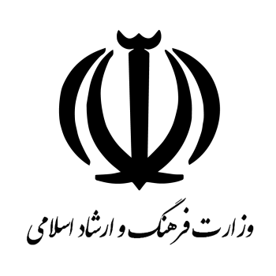
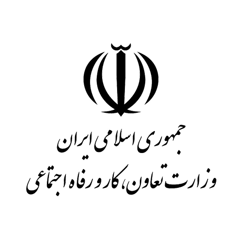

درباره ما
آکادمی آموزش های مجازی بین المللی فارابی در تاریخ 1393/06/15 راه اندازی شد و شروع به فعالیت نمود .
پس از شروع فعالیت و استقبال از دوره های آکادمی فارابی، آموزش های این مرکز محدود به ایران نشده و ایرانیان و غیر ایرانیان در سراسر جهان نیز از این آموزش ها بهره مند شدند به طوری که هم اکنون دانش پذیرانی از کشورهای عراق، افغانستان و کشورهای حاشیه خلیج فارس … از آموزش های مجازی مرکز استفاده می کنند.
مهمترین هدف آکادمی فارابی، تلاش
در جهت توسعه آموزش های مجازی در بستر اینترنت و حضوری
در آکادمی برای پیشرفت و ارتقای هرچه بیشتر و بهتر عموم مردم است.
مجوز های آکادمی آموزشی فارابی

